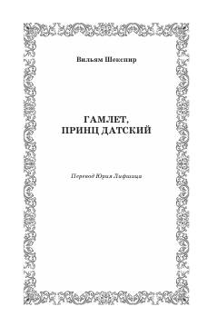

ГПDaniya shahzodasi Gamletning qasos, xiyonat va hayot mazmuni haqidagi buyuk fojiasi.
Vilyam Shekspirning jahonga mashhur 'Gamlet, Daniya shahzodasi' fojiasining Yuriy Lifshits tomonidan rus tiliga o'girilgan she'riy tarjimasi. Asarda otasining qotilidan qasos olmoqchi bo'lgan shahzoda Gamletning ruhiy iztiroblari va saroy fitnalari tasvirlanadi. Ushbu klassik asar inson tabiati, hayot va mamot kabi abadiy falsafiy savollarni o'rtaga tashlaydi.